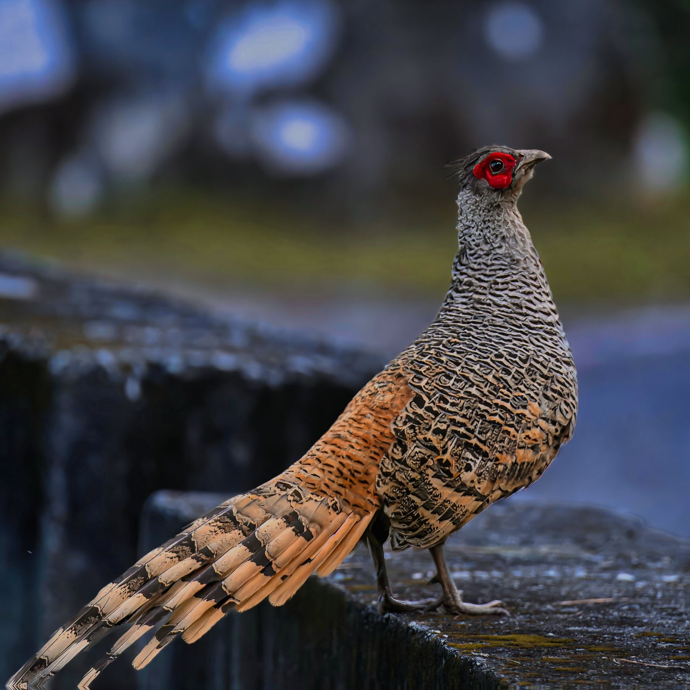
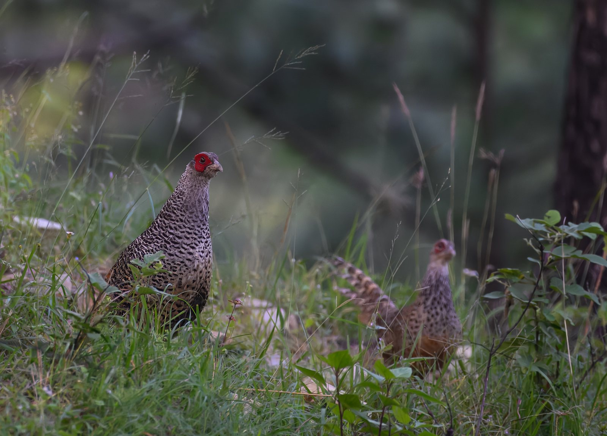

The Cheer Pheasants of Ranikhet
A birder's encounter in Kumaon
By Vivasvat Chauhan ·

As an avid birder, I had been coming across many social media posts about a spectacular bird from the chir pine slopes around Ranikhet in Kumaon: the Cheer Pheasant.
I also run a small, quiet cottage, Firwood Cottage, which I let out to nature lovers and birders who come to experience this landscape. The cottage is within 20 minutes of Cheer Pheasant habitat. Many birders visiting the area were travelling from Sattal in Nainital district, a journey of nearly two hours. That meant an extremely early start just to arrive at dawn, when these birds are most active.
I consider myself incredibly lucky to be able to wake up, enjoy a hot cup of coffee, and head straight into the hills in search of this elusive Himalayan bird.
Why Ranikhet is ideal for spotting the Cheer Pheasant
It was clear almost at once why this area is perfect habitat: steep pine forest broken by open, grassy slopes, exactly the terrain the Cheer Pheasant prefers.
Into the pine slopes of Ranikhet
One morning, I did just that. I packed my camera gear and set out with Pradeep, a fellow nature lover from the area, to find the Cheer Pheasant. Using recent bird records and hotspot maps, we reached the location.
We walked about 100 metres down the slope and sat quietly, ears tuned for their distinctive call. Nothing. So we moved again, dropping deeper into the nala, the steep stream gully, below us.
And then: the call.
I could barely contain my excitement. Neither could Pradeep.
A rare Cheer Pheasant sighting
We sank into the grass and waited. Moments later, to our absolute joy, a pair of Cheer Pheasants appeared just 40–50 feet away. They seemed almost as curious about us as we were about them.
I grabbed my camera and started shooting, both video and stills. After a few moments, I lowered the camera and simply watched. I was completely awestruck.

The female, smaller and paler than the male, was still stunning, her tail patterned with beautifully detailed bars.
The male, far more vocal, had striking red skin around the eye, a long, elegant tail and a crest crowning his head.
I could hardly believe my luck. We climbed back up to the road, and the luck held: the male had climbed the slope too, and stood on the road divider (the photo at the top of this post) before carrying on up the slope on the other side.
Threats to the Cheer Pheasant
Habitat loss
The biggest threat to the Cheer Pheasant is habitat loss. Every year, grass on these slopes is cut for fodder, or wildfires sweep through the hills, leaving whole areas stripped bare. As the habitat shrinks, breeding slows and populations decline.
Poaching
Poaching still happens in some pockets of the region, as local sources confirm. It further reduces an already vulnerable population.
I am now exploring ways to involve the forest department and local stakeholders in protecting this remarkable bird. Small steps, taken consistently, can make a real difference over time.
Some mornings stay with you forever. This was one of them.
For where and when to look, and how to tell it from Koklass and Kalij, see my Cheer Pheasant guide.